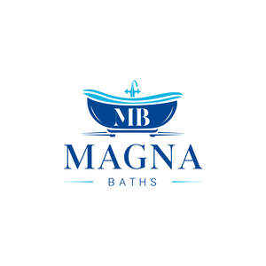

Trade Mark Journal No.2025/051 19 December 2025
UK00004304228 2 December 2025 (3,11,21,35,37)

- Class 3
- Bath salts; Bath lotion; Bath soap; Bath soaps; Shower and bath foam; Bath and shower foam; Bubble bath; Bath and shower preparations; Shower and bath preparations; Preparations for use in the bath or shower; Preparations for the bath and shower; Bath and shower gel; Shower and bath gel; Bath and shower gels; Bath gel; Bath cream; Bath milk; Bath creams; Bath oils; Bath gels; Non-medicated bath salts; Cosmetic bath salts; Foams for the bath; Bath foams; Bath crystals; Bath foam; Foam bath; Bath oil; Bath and shower oils [non-medicated]; Baby bubble bath; Liquid bath soaps; Preparations for the bath; Bath preparations; Cosmetic preparations for bath and shower; Liquid bath soap; Bubble bath preparations; Bubble bath [for cosmetic use]; Baby bath mousse; Bath lotions (Non-medicated -); Bubble baths; Bath foams (Non-medicated -); Foaming bath gels; Non-medicated bath oils; Bath oils (Non-medicated -); Bath creams (Non-medicated -); Bath gels (Non-medicated -); Non-medicated bubble bath preparations; Bath soak for cosmetic use; Foaming bath liquids; Bubble bath preparations [for cosmetic use]; Soap; Refill packs for hand soap dispensers; Liquid soap; Deodorant soap; Soap (Deodorant -); Soap (Antiperspirant -); Perfumed soap; Aloe soap; Refill packs for shampoo dispensers; Soap products; Liquid soaps; Cosmetic soap; Refill packs for shower gel dispensers; Shower gel; Foams for use in the shower; Shower foams.
- Class 11
- Bath fittings; Fittings (Bath -); Bath taps; Bath spouts; Heaters for bath water; Bath installations; Bath plumbing fixtures; Faucet filters [plumbing fittings]; Valves [plumbing fittings]; Spouts [plumbing fittings]; Aerators for faucets [plumbing fittings]; Flexible pipes being parts of bath plumbing installations; Cocks [plumbing fittings]; Push-on sprays for use with bathroom faucets; Fittings for the draining of water; Regulating fittings for water pipes; Bath armatures for water control; Faucets; Water faucet spout; Faucet sprayers; Water faucets; Taps [faucets]; Tap water faucets; Mixer taps [faucets]; Mixer faucets for water pipes; Mixing taps [faucets]; Water control valves for faucets; Tub control valves [plumbing fittings]; Valves [faucets] being parts for sanitary installations; Mixer taps for water pipes; Touchless taps; Water taps; Taps for water pipes; Taps for the control of water flow; Manually-operated plumbing valves; Water taps being parts of sanitary installations; Taps for regulating water flow; Mixer taps for the manual regulating of water temperature; Taps; Anti-splash tap nozzles; Nozzles (Anti-splash tap -); Taps for water supply; Washers for water taps; Taps for water supply installations; Taps for the control of waterflow; Taps for pipes and pipelines; Water taps being parts of water supply installations; Taps [cocks, spigots] faucets [Am.] for pipes; Taps [cocks, spigots] [faucets (Am.)] for pipes; Taps for sanitary installations; Faucet filters; Washers for water faucets; Water outlets [faucets]; Faucet aerators; Spigots [faucets]; Faucet handles; Sanitary water fittings; Sanitary installations; Installations and apparatus for sanitary purposes; Apparatus and installations for sanitary purposes; Steam valves; Ball valves; Water control valves; Safety valves for water apparatus; Mixing valves [faucets]; Safety valves for water pipes; Stop valves for regulating water; Water regulating valves [safety accessories]; Stop valves being safety apparatus for water apparatus; Electrically controlled water faucets; Water pressure reducers [regulating accessories]; Regulating accessories for water or gas apparatus and pipes; Safety fittings for water pipes; Hot water apparatus; Water pressure reducers [safety accessories]; Water heaters [apparatus]; Bathroom installations for sanitary purposes; Installations for sanitary purposes; Sanitary and bathroom installations and plumbing fixtures; Bathroom installations for water supply purposes; Bathroom basins [parts of sanitary installations]; Fittings for sanitary purposes; Bathroom installations; Sanitary installations and apparatus; Sanitary apparatus and installations; Shower bath fittings; Shower fittings; Shower mixers; Shower bath installations; Mixer showers; Heaters for shower baths; Shower hoses; Water heaters for shower baths; Shower valves; Shower control valves [plumbing fittings]; Shower attachments; Shower apparatus; Shower sprayers [plumbing fittings]; Bath linings, fitted; Controlled mixers being parts of shower installations; Shower mixing valves; Shower taps; Bath tubs; Shower installations; Spray fittings [parts of sanitary installations]; Sanitary drain armatures for baths; Heating armatures; Baths; Temperature control valves [parts of water supply installations]; Water supply apparatus; Apparatus for controlling temperature in central heating radiators [valves]; Water regulating apparatus.
- Class 21
- Soap dispensers; Dispensers (Soap -); Dispensers for liquid soap; Liquid soap dispensers; Hand soap dispensers; Soap dispensing bottles; Shampoo dispensers; Dispensers for liquid soap [for household purposes]; Liquid soap holders; Soap containers; Dispensers for detergents; Shower gel dispensers; Body cleanser dispensers; Baby bath tubs.
- Class 35
- Inventory control; Electronic data processing; Computerised data processing; Retail services in relation to sanitary installations; Wholesale services in relation to sanitary installations; Retail services in relation to sanitation equipment; Retail services in relation to furnishings; Retail services in relation to heating equipment; Retail services in relation to building materials; Retail services in relation to hygienic implements for humans; Wholesale services in relation to sanitation equipment; Retail services in relation to toiletries.
- Class 37
- Plumbing; Installation of plumbing; Maintenance of plumbing; Plumbing services; Installation of plumbing systems; Plumbing installation, maintenance and repair; Plumbing installation advisory services; Plumbing repair advisory services; Plumbing maintenance advisory services; Advisory services relating to the repair of plumbing; Advisory services relating to the maintenance of plumbing; Repair of sanitary installations.
Tyrese Anderson Dyer